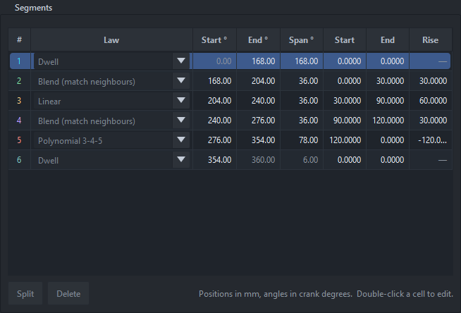
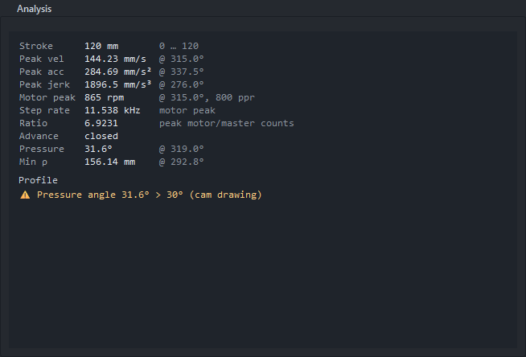
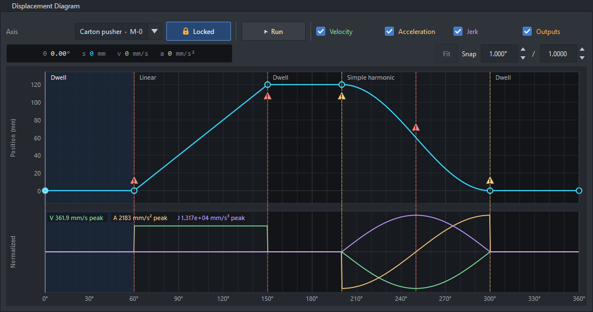

An axis's motion is a list of segments over its master (0–360° on the crank, 0 to the duration on the timeline). Each segment has an end (where it stops on the master), an end position (in the axis's units) and a motion law; it starts where the previous one ended.
The boundaries between segments are knots (the circles in the diagram). Knot 0 is at x = 0 (the start position); the last knot is at 360° (crank) or at the duration (timeline).
Every edit can be undone (Ctrl+Z); a whole drag is one step.

The Segments table of the flying saw's carriage: one row per segment.
One row per segment. Pick the law in the first column; double-click a cell to type an exact end, span, position or rise. Split and Delete work on the selected row.
The lock in the diagram's bar (or Edit › Lock profile, Ctrl+L) guards the profile against accidental edits. While it is locked, knots and pulses can't be dragged, double-click and right-click don't split, delete or change laws, and the Segments and Outputs tables are read-only. Scrubbing, zoom, pan, undo / redo and Run still work, and the pages in the detail pane are not locked.
The lock is not saved in the file.

The Analysis page: the peaks, motor speed and warnings of the selected axis.
For the selected axis, at the master speed:
The diagram marks each problem where it happens: a warning sign over the curve and a dashed line down through the plots, red for an error (a velocity step, a velocity or acceleration over the axis's limit) and amber for a warning (an acceleration step, a spline overshoot, a pressure angle above 30°, undercut). Hover over the sign for what it is and what to do.

A pusher with a Linear rise and a Harmonic return: velocity steps (red) where the rise starts and stops, acceleration steps (amber) at the ends of the return, and the return's velocity over the axis's limit (red).
Axis › Import points as spline replaces the axis's segments with a
Cubic spline through the points in a file: a CSV or text file with the master value in
the first column and the position in the second (a table from File › Export reads back too; lines starting with #,
and a heading line, are skipped). The values in the first column map onto the axis: first to last is the whole
revolution on the crank, and the duration on the timeline. Up to 65 points become knots; with more, the Workbench
picks the 65 that keep the curve closest, and says how far it ends up from your points. If the last position equals
the first the axis is closed, otherwise open. One undo puts the axis back. Try it with
samples/spline_points.csv.
Axis › Add axis (or Duplicate) adds a follower; each needs its own motor connector. Pick the axis in the diagram's Axis list (or the Axis page). Every crank axis shares the crank, every timeline axis the timeline.
Which law to use? See Motion laws.